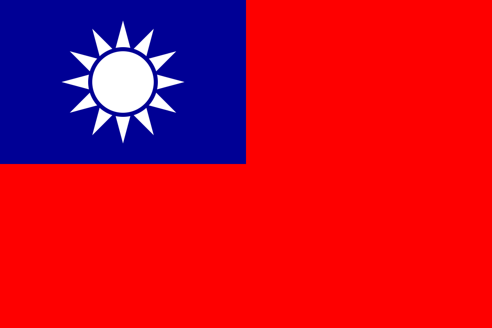

Glossary
Historical Events
XinHai Revolution (1911)
The XinHai Revolution of 1911, or Revolution of 1911, was a successful revolt against the Qing Dynasty. The revolution led to the establishment of the Republic of China (ROC) in 1911-1912. The cause of the revolution included the corruption of the Qing dynasty and subjugation of the Western and Japanese in China.
CCP Formation (1921)
The Chinese Communist Party (CCP) was founded on July 23, 1921 by Chen Duxiu and Li Dazhao at the Shanghai French Concession. The CCP was founded in the Shanghai French concession building.
Northern Expedition (1926)
a military campaign launched by KMT. The Northern Expedition was a military campaign by the Nationalists started from July 9, 1926 to 1928 to unify China after the Xinhai Revolution.
Shanghai Massacre (1926)
The Shanghai Massacre, known as the April 12 Purge, was a violent suppression to the Chinese Communist Party by Chiang Kai-Shek and his supporters in the KMT. It is unclear how many people was killed; some say 5000 people was killed, while others claim up to 10,000 people was killed.
Long March (1934)
The Long March was a journey, a retreat from the KMT, that started on October 16, 1934, and lasted 1 year, 6 days. This march solidified Mao as chairman. The Long March later became known as a symbol of heroism of the CCP, as survivors faced hardships such as freezing and starving.
Xi'An Incident (1936)
During December 12-25 of 1936, Generalissimo Chiang Kai-Shek was captured by two of his generals. Those who accompanied Chiang was arrested by Yang HuCheng's troops, and Chiang was arrested by Zhang XueLiang's troops. After oral acceptance of the proposal of negotiating with the Communists to fight the Japanese, Zhang was later imprisoned throughout the war. In 1949, Chiang secretly ordered the execution of Yang.
Chinese Civil War
The Chinese Civil war was a time period of conflicts between the Chinese Nationalists and Communists that ended in 1949, when Mao ZeDong established the PRC and when Chiang Kai-Shek retreated to Taiwan. The time period from 1927 to 1937 was known as the Ten-Year Civil War (十年内战). Notable events during this time period includes the Communist Party's uprising in Nanchang against the Nationalist government in Wuhan on August 1, 1927.
Second Sino-Japanese War (1937–1945)
The Second Sino-Japanese War, also known as Eight Year War of Anti-Japanese Resistance （八年抗战), was a military conflict waged mainly between the Empire of Japan and the Republic of China (ROC). During the war, Chiang Kai-Shek (Jiang JieShi) viewed the Chinese Communists as a greater threat, as opposed to the Japanese invasion of Manchuria. After the Xi'An Incident in December, 1936, Chiang agreed to work with the CCP. After the war ended with the Japanese surrender in 1945, the Chinese Civil War started again.
228 Incident (1949)
A massacre that was suppressed by Chen Yi and Chiang Kai-Shek of the KMT. This event was followed by the White Terror 2 years later.
Taiwan Strait Crises
Started in 1954. The Taiwan Strait Crises happened when the PRC bombed several islands controlled by the ROC.
Project National Glory (Guo Guang)
An attempt to reconquer mainland China was planned by Jiang. The project was established on April 1, 1961, and the goal was to use large-scale invasion. However, the plan lacked support from the U.S. and the plan required more forces than the KMT had.
Cultural Revolution
Started from 1966 and ended in 1976, when Mao ZeDong passed away. Books that the CCP were against was burned.
Project 571
Project 571 was a plot that planned to assassinate Mao ZeDong. The plan failed.
Historical Terms
Qing Dynasty
Also known as the ManChu Dynasty. This dynasty was the last imperial dynasty of China and was overthrown by revolutionaries in 1911.
Reople's Republic of China (PRC)
Founded on October 1, 1949 by Chinese Communist Mao ZeDong.
Republic of China (ROC)
Founded by Sun Yat-sen (Sun ZhongShan/ 孙中山) in 1912 after the XinHai Revolution (1911).
Kuomintang (KMT, Guo Min Dang)
Political party in the ROC, founded in November 24, 1894, Shanghai, China.
Gang of Four (四人帮)
Led by Jing Qing, Mao ZeDong's last wife, the Gang of Four was later arrested and charged with treasonous crimes after Mao's death in 1976. It remains unclear how many decisions the Gang of Four participated in during the Mao era.
Historical Figures
Sun Yat-Sen (孙中山)
Sun Yat-Sen was the founder of Kuomintang, and known as the father of modern China. Sun has got the name "Yat-Sen (逸仙)" during his time in Hong Kong. His brother-in-law was Chiang Kai-Shek. Sun is considered one of the most prominent leaders of the XinHai Revolution in 1911. When Sun Yat-Sen died on March 12, 1925, in BeiJing, Chiang Kai-Shek became his successor for the KMT.
Zhou EnLai (周恩来)
Zhou served under Mao ZeDong. Born into a gentry family in 1898, died in 1976. From 1937 to 1943, Zhou was the CCP’s chief representative to the Nationalist government. He played a significant role in helping forming the CCP and growing the Chinese economy.
Chen DuXiu (陈独秀)
Chen was the co-founder of the CCP in 1921. Chen DuXiu played a major role in the XinHai Revolution of 1911 and in the May Fourth Movement.
Peng DeHuai (彭德怀)
Peng DeHuai, or Peng DeHua, was a military leader and member of the CCP. Mao ZeDong and Peng DeHuai's relationship after the death of Mao AnYing is unclear. At the Lushan Conference in 1959, Peng was labeled by Mao ZeDong as a leader of an "anti-Party clique, which removed Peng's power in the CCP.
Lin Biao (林彪)
Lin Biao played a significant role in the Cultural Revolution. Died in 1971 after the plot of Project 571 was discovered.
About Site
Works Cited
MLA formatted works cited page is linked from this github repository's readme.
Translations
Translations from Chinese to English (in the website) are done by me, without translating tools. I attempted to translate the media scripts to English to the best of my ability. Some sentences may feel off when reading it.
Codes
Source code by me can be found in the files in this repository. The timeline was inspired by this ! I used Repl.it to make this site, then uploaded the individual files to github.
This site is hosted by GitHub Pages.